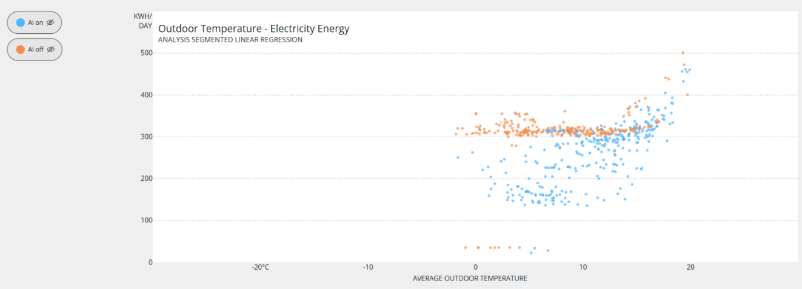

University of St Andrews — Scottish Oceans Institute
University / Higher Education
- 21.1% HVAC electricity reduction
- 9.2% heat reduction
- 158 MWh measured energy saving
myCoreAI continuously optimises HVAC every 15 minutes using live building behaviour, occupancy patterns and weather conditions, typically reducing HVAC electricity consumption by 20–35% without the need for manual intervention.
Trusted across around 2,000 buildings in 13 countries, EcoAI provides transparent, auditable evidence so building teams can evaluate real outcomes with confidence.

Measured performance example
This monthly profile shows weather-normalised AI off and AI on performance for HVAC electricity and heat in a live occupied building. The gap between the lines shows the savings delivered by continuous EcoAI optimisation while normal building operation is maintained.

Case study summaries
University / Higher Education
Local Government / Public Sector
Against the expected post-decarbonisation energy profile
Further sector evidence
Additional projects demonstrate the breadth of the optimisation approach across commercial, corporate, retail and hospitality environments, while working through existing controls infrastructure.
Retail / Mixed-Use
A 39,800 m² retail and office property with different indoor-climate requirements across common and tenant areas.
Hospitality / Mixed-Use
A 25,553 m² hotel and office building combining guest-comfort requirements with office operation.
Established commercial reference
A successful multi-let office deployment demonstrating measurable electricity and gas savings through the existing BMS.
Established corporate reference
A corporate-office deployment showing sustained savings over two reporting years while leveraging the installed BMS.
HVAC savings in practice
Continuous optimisation reduces unnecessary HVAC operation while maintaining comfort and appropriate ventilation conditions. The BMS remains the control system, while EcoAI helps reduce avoidable airflow and conditioning demand when conditions allow — and lets output increase again when the building needs it.
1
When indoor temperature is stable and CO₂ remains low, airflow can operate below the reference level.
2
Lower airflow reduces fan demand and the volume of air that needs to be heated or cooled.
3
Airflow rises again when building demand, temperature or ventilation requirements change.
In a reviewed 30-day AHU2 example at Gatty Marine, optimised supply airflow was 27% lower than the reference signal and extract airflow was 22% lower, while average indoor temperature remained at 22.18°C and average CO₂ remained low at 457 ppm.
Example shown is based on AHU2 dashboard data for the reviewed period and should not be read as a whole-building annual saving.
EcoAI compares building performance against a weather-normalised baseline, including periods with AI optimisation active and inactive. This helps show whether lower energy use is being achieved under comparable external conditions, rather than simply because of changes in weather.

Proof brief
Use our concise proof brief for stakeholder review, investment discussions, and internal business-case conversations.